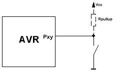
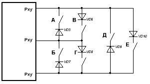

Принцип работы с PullUp. Актуально для всех МК.
Для кнопки вывод надо сконфигурировать пин как вход с подтяжкой (DDRxy=0 PORTxy=1). Тогда, если кнопка не нажата, через подтягивающий резистор на входе будет высокий уровень напряжения, а из PINху будет читаться 1. Если кнопку нажать, то вход будет положен на землю, а напряжение на нем упадет до нуля, т.е. из PINxy будет читаться 0.

Пунктиром показан дополнительный подтягивающий резистор. Несмотря на то, что внутри AVR на порт можно подключить подтяжку, она слабовата — 100кОм. А значит, ее легко придавить к земле помехой или наводкой, что вызовет ложное срабатывание. А еще эти внутренние подтягивающие резисторы очень любят гореть от наводок. Поэтому, для ответственных схем настоятельно рекомендуется добавлять внешнюю подтяжку на 10кОм — даже если внутреннюю накроет, внешняя послужит.
Схема перекрестного подключения 2-х кнопкок с использованием двух портов.
Одна нога дает подтяг, вторая косит под землю. Нажатие кнопки дает просадку напряжения на подтягивающей ножке. Это чует программа, поочередно опрашивающая каждую кнопку. Потом роли ножек меняются и опрашивается следующая кнопка.
По подобной схеме можно подключить 6 кнопок, задействовав 3 порта:

В шестикнопочном режиме ситуация схожая — одна ножка дает подтяг, другая землю, а третья прикидывается Hi-Z и не отсвечивает.
Но тут есть один побочный эффект. Например, опрашиваем мы кнопку «В». Для этого у нас верхняя линия встает на вход с подтяжкой (PORTxy=1, DDRxy=0), средня дает низкий уровень на выходе (PORTxy=0, DDRxy=1), нижняя не участвует в процессе ибо стоит в Hi-Z (PORTxy=0, DDRxy=0). Если мы нажмем кнопку «В» то верхняя линия в этот момент просядет и программа поймет что нажата кнопка «В», но если мы не будем жать «В», а нажмем одновременно «Е» и «Б» то верхняя линия также просядет, а программа подумает что нажата «В», хотя она там и рядом не валялась. Минусы такой схемы — возможна неправильная обработка нажатий. Так что если девайсом будут пользоваться быдло-операторы, жмущие на все подряд без разбора, то от такой схемы лучше отказаться.